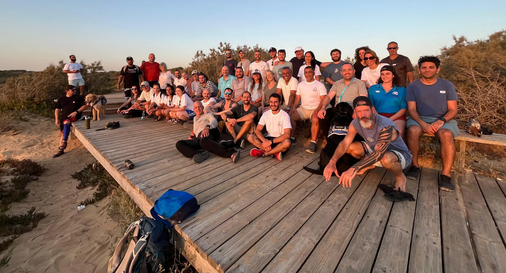
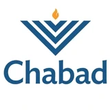
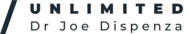
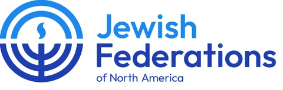
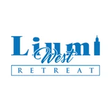
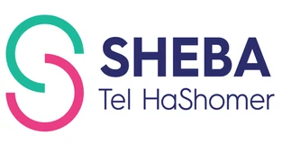
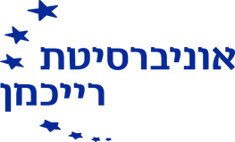
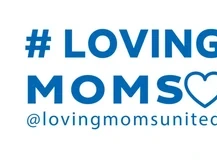
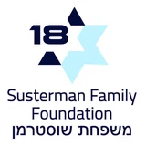

קבוצות קטנות והיכרות אישית
אנחנו מכירים את האנשים שבקבוצה ובונים קשר שמאפשר לכל משתתף ומשתתפת להרגיש שרואים אותם. יש מי שמקשיב, מבחין כשלא הגעת ומלווה גם כשקשה.

יש עוד דרך קדימה. הולכים בה יחד.
לב אל לב ישראל מלווה לוחמים ולוחמות המתמודדים עם פוסט טראומה בעקבות שירותם הצבאי, במסע של שיקום והעצמה. דרך קהילה, גוף ונפש ומנטורים, אנחנו בונים יחד כלים להתמודדות, קשרים מתמשכים והזדמנויות לחיים של שייכות ומשמעות.
הדרך של לב אל לב
החזרה הביתה היא תחילתה של דרך שלעיתים נמשכת שנים. ההתמודדות נוכחת בשינה, במערכות היחסים, בעבודה ובשגרה היומיומית.
המסע בלב אל לב מעניק מסגרת מתמשכת שבה אפשר לבנות אמון, למצוא אנשים שמבינים, לפתח כלים ולהתקדם בקצב אישי.
להכיר את מסע השיקום וההעצמהמה הייחודיות שלנו?
אנחנו מכירים את האנשים שבקבוצה ובונים קשר שמאפשר לכל משתתף ומשתתפת להרגיש שרואים אותם. יש מי שמקשיב, מבחין כשלא הגעת ומלווה גם כשקשה.
27 מורים ומורות בפריסה ארצית, לצד פעילויות קבוצתיות בשישה מרחבים ברחבי הארץ, מביאים את העשייה קרוב לבית. התוכנית האזורית פועלת ב־12 מוקדים.
הדרך יכולה להתחיל בתוכנית האזורית או בתוכנית ״במעגל החיים״ ולהמשיך, לאחר בדיקת התאמה, למסע העצמה בן 18 חודשים. הקהילה והקשר ממשיכים גם בהמשך הדרך.
ההשפעה שלנו
דיווחו שהתוכנית סייעה להם להתקדם בתהליך השיקום האישי.
דיווחו שפעילות הקהילה חיזקה את תחושת השייכות והמשמעות.
דיווחו שהיוגה תרמה להפחתת מתח ולחץ.
שיטת השיקום וההעצמה שלנו
המסע מחבר בין שלושה עוגנים שתומכים זה בזה ובחיים שמחוץ למפגשים.
קבוצה שמכירה אותך, מפגשים קבועים וקשרים שמאפשרים להרגיש חלק ממשהו ולהישען על אחרים.
יוגה תרפיה מותאמת טראומה, נשימה ותנועה, עם כלים שאפשר לקחת אל חיי היום־יום.
קשר אישי ומתמשך עם מנטורים מקהילות יהודיות בעולם, שמביאים הקשבה, ניסיון חיים ונוכחות לאורך הדרך.
[כאן יוצגו שלושה סיפורים אישיים מקוריים.]
תקציר מתוך הסיפור
לסיפור המלאתקציר מתוך הסיפור
לסיפור המלאתקציר מתוך הסיפור
לסיפור המלא







המלחמה ממשיכה איתם הביתה
התמיכה שלכם מאפשרת לקיים את מסע השיקום וההעצמה ולהמשיך ללוות לאורך הדרך.
לתרומה